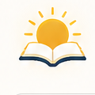

Light Reader
Checking this page...
Site Mode
Auto detect dark pages.
Reading Background
Default: Paper
Temporarily lighten this page. Does not save the site.
Always Lighten Sites
How Light Reader Works
Auto looks for dark reading pages and leaves dashboards or light pages alone.
Always saves a site rule so Light Reader runs on that domain every time.
Never saves a site rule that keeps Light Reader off for that domain.
Lighten Now applies temporarily to the current tab without saving a rule.
Chrome pages and restricted browser screens cannot be changed by extensions.
Need a hand?
Share diagnostics with a bug report so page-specific issues are easier to reproduce.
Light Reader
A quiet reading helper that softens dark article pages while keeping site controls in your hands.
Reset all settings?
This restores Paper as the default shade, clears saved site rules, and returns the current tab to Auto.